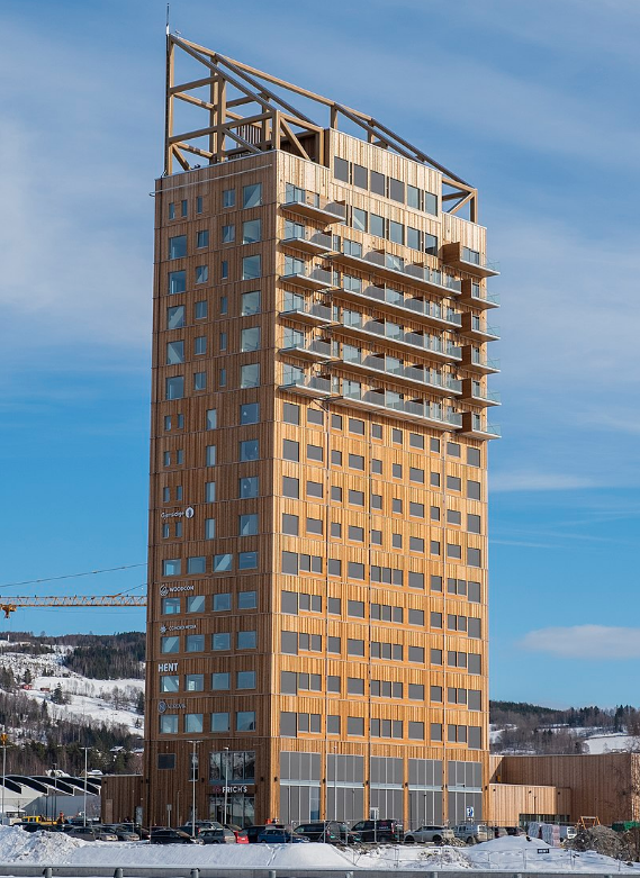

4 Wood
Architects and developers are increasingly aware of the role played by steel and concrete manufacturing in the worsening climate crisis, and there is already a move in some quarters towards much more sustainable building materials.
One such material is already being widely used in construction, but recent advances mean it is stronger and more durable than it has ever been before, and has a far, far lower environmental impact than concrete or steel. That material is wood.
Though timber-framed buildings are hardly new, instead of sawing enormous beams from ancient trees, new techniques focus on using fast-growing soft woods, stuck together in a form which provides massive strength, durability, and flexibility of design.
One example of this, cross-laminated timber (CLT), is manufactured using a technique developed in the 1990s in Austria, in which sheets of kiln-dried wood are glued on top of each other, with the grain of each layer running perpendicular to the next.
This method can create huge boards, up to a foot thick, and as long and as wide as the manufacturer’s premises allow.
What’s more, the strength of these coagulated timber slabs can match or exceed steel or concrete.
The use of CLT as a modern construction material has already been definitively proven.
The world’s largest CLT structure is Dalston Works, a 10-storey residential building of 101 flats, in Hackney, London, which was completed in 2017, and won the “eco living award” at the Evening Standard’s 2018 New Homes Awards.
Meanwhile, the world’s tallest timber building has also been built using CLT – the 85.4-metre, 18-storey Mjostarnet building in Norway, which was completed in 2019 and is also the country’s third-tallest building. The mixed-use building contains apartments, a hotel, a swimming pool, office space and a restaurant.

Figure: Mjøstårnet
For new buildings, the energy regulations are pushing energy consumption and carbon emissions down to the point that the main carbon emissions from new buildings through their life cycle come from their construction and materials.
CLT buildings may be able to store more carbon in the wood than their entire construction generates.
As trees absorb CO2 when they grow, CLT is considered to have a negative embodied carbon – meaning that the CO2 absorbed by the tree during its growth can be more than that emitted in the manufacture of the CLT product and its transportation to the site.
At the end of its useful life CLT can be repurposed – something tricky to achieve with other building materials.
The timber used should come from managed forests which have been properly certified as being sustainable sources of wood.
However, “sustainable forestry” is a contentious subject, with different meanings in different countries. While vast forests of fast-growing conifers may be able to rapidly fulfil timber orders, a growing understanding of the impact of monoculture cropping on biodiversity, and what it means for carbon sequestration, is also a key consideration for those seeking to herald CLT as a straightforward environmentally friendly choice.
The wood used in the 10-storey Dalston Works building in London was grown in forests in Austria and Germany which have been certified as sustainable.
It was then manufactured into CLT in Austria and brought by road to the UK.
According to the developers, the building used 4,500 cubic metres of timber, which equates to about 2,300 trees. With more than 800 people living in the building, they say it worked out at about three trees per person.
the main tree grown for construction in the UK is the sitka spruce, an imported conifer from the Pacific northwest of North America.
In their home region these trees can reach 40-70 metres in height, but in the UK, where conditions are milder, their growth rate is faster but the resulting density of the wood is lower, making it weaker.
As a result, higher strength timber grown in Europe is normally used for key structural purposes.
One particular concern about the extensive use of wood in construction is the potential for flammability.
In order to be used as a commercial construction material, CLT has been extensively fire-tested, and is designed to accommodate substantial fire resistance.
Furthermore, unlike steel, CLT remains structurally stable when subjected to high temperatures. CLT is green, cost-effective, fast to install, requires less foundation, and results in less waste than traditional construction.
From Comments
It is incorrect to say that CLT “unlike steel” remains structurally stable to high temperatures. Steel used in buildings retains at least 100% of its cold strength up to about 360°°C. (It’s actually stronger at around 150-300°C.) What is true is that its insulation properties causes wood to degrade more slowly when exposed to heat as the heat doesn’t penetrate so fast. Which is why steam boilers are made out of steel and not wood